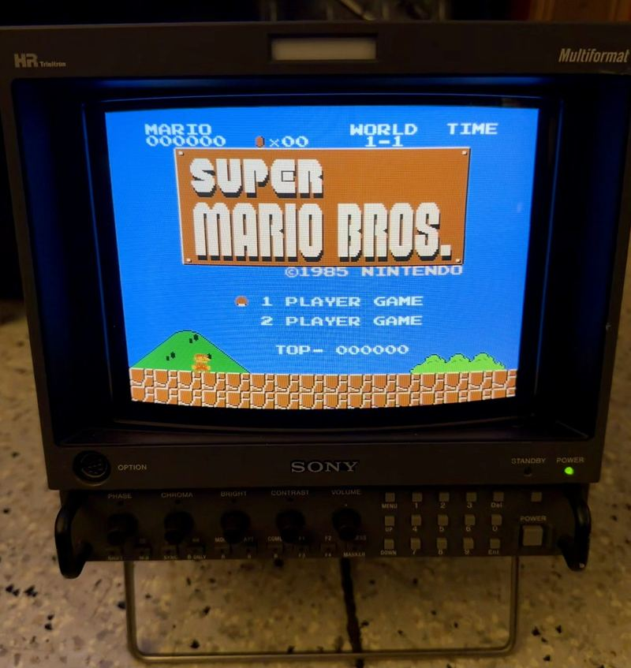
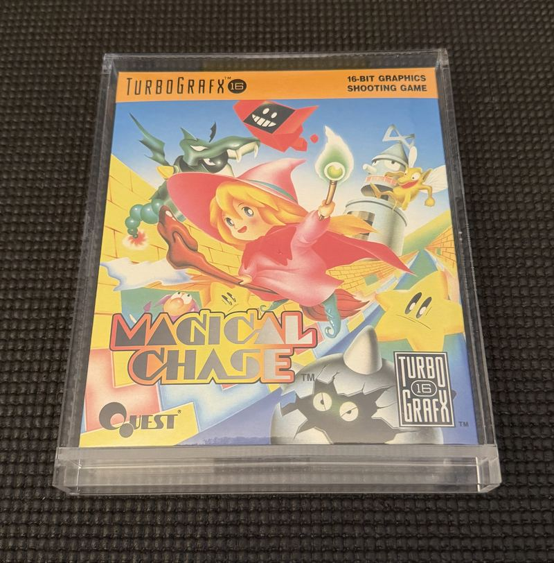
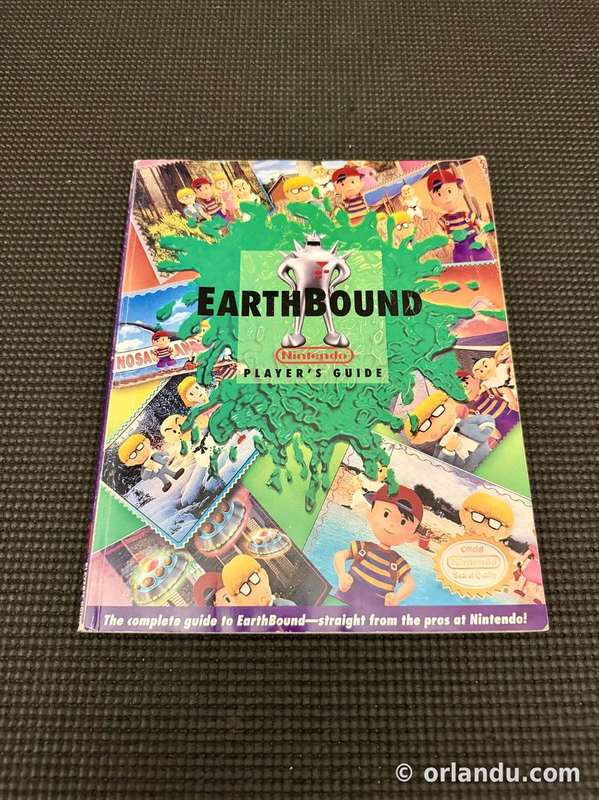
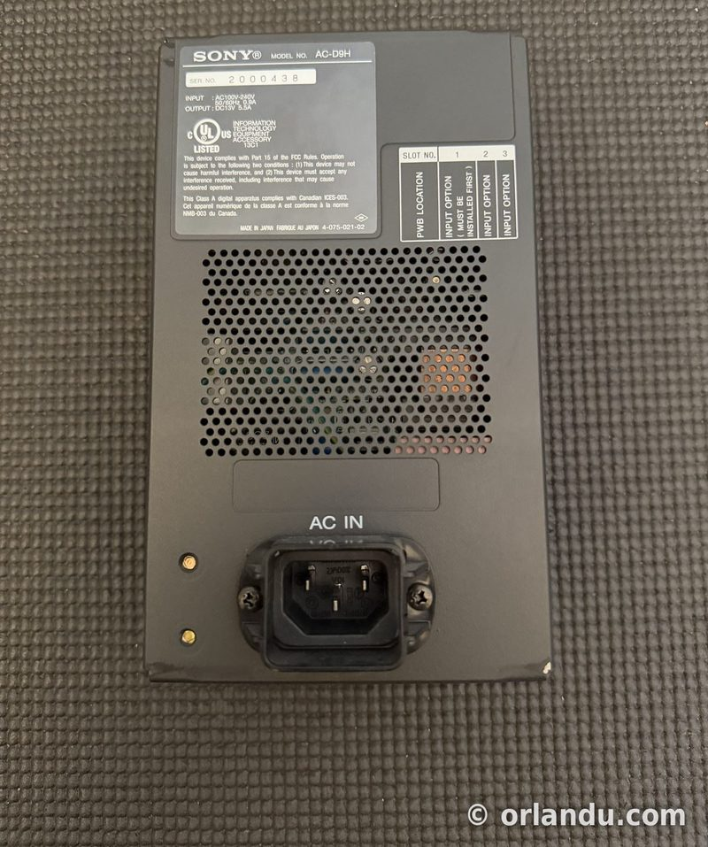
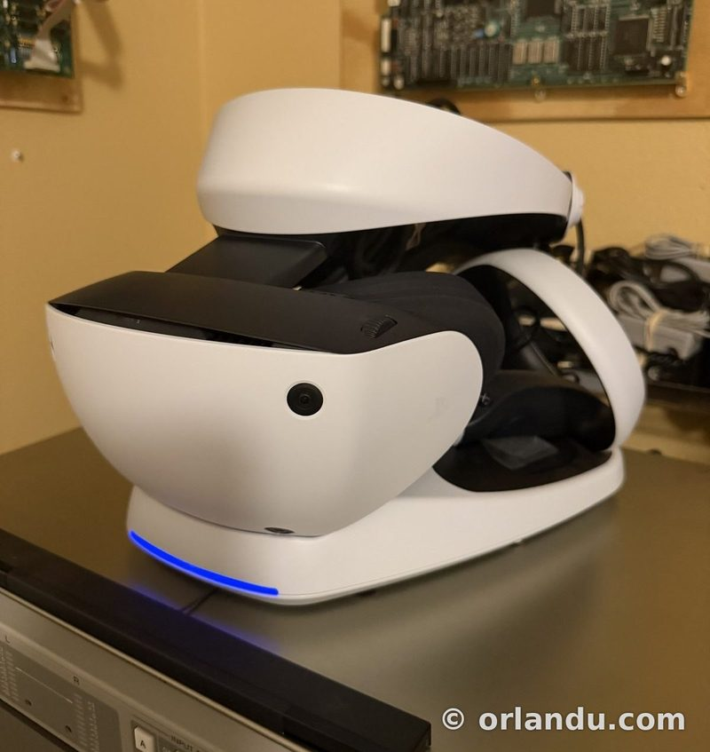
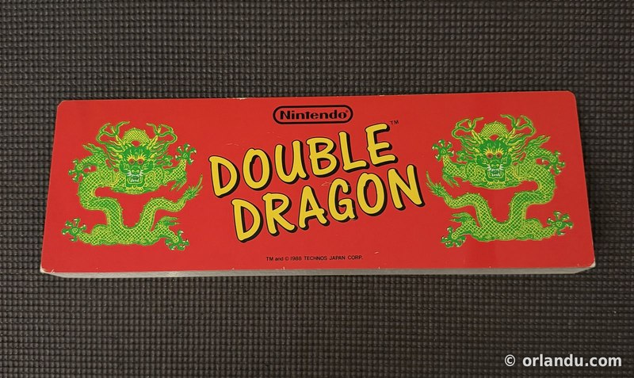
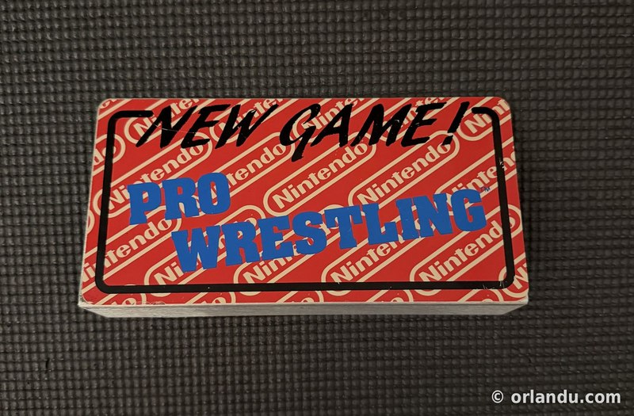

For Sale
The collection consolidates over time — duplicates and departures get listed so they can go to someone who'll use them. Sales run through eBay with years of seller history behind them.
Currently listed

Sony BVM-D9H5J
Sony's 9-inch multi-format broadcast reference monitor — the portable D-series legend. This unit is fully kitted with input cards (BKM-129X-compatible analog input plus BKM-142HD HD-SDI). A serious little monitor for a serious setup.

Magical Chase — TurboGrafx-16 (PCE Works Repro)
PCE Works reproduction of Quest's gorgeous cute-'em-up — one of the most hunted titles in the TurboGrafx library, in beautiful repro form, boxed and kept in a protective display case.

EarthBound Player's Guide
The official Nintendo Player's Guide that shipped in EarthBound's big box — the complete guide, straight from the pros at Nintendo.

Sony AC-D9H Power Supply
The AC adapter for the BVM-D9 series — clean, made-in-Japan unit. Pairs naturally with the D9H5J above.

PlayStation VR2
Sony's PS5 VR headset with charging stand. This one isn't on eBay — it sells direct.

Nintendo Double Dragon Marquee
Original Nintendo marquee for Double Dragon (™ & © 1988 Technos Japan) — the twin green dragons on red, ready to light up a VS. cab.

Nintendo Pro Wrestling Marquee
The Nintendo-pattern marquee insert for Pro Wrestling — a slice of 1986 VS. System operator history. A winner is you.
Vintage gaming & electronics
Collectibles, arcade hardware, and rare electronics get listed regularly.
Prices shown are eBay asking prices, with eBay's fees baked in. Buying direct? Email orlandusarcade@gmail.com for better pricing.